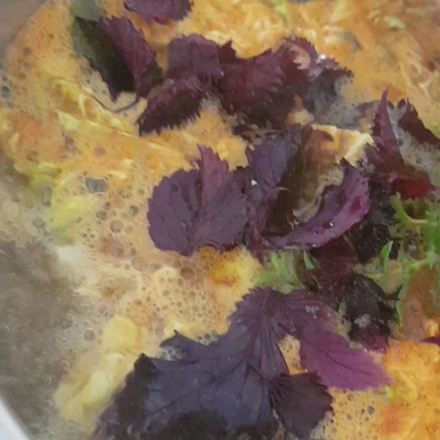

Hrstková polievka podľa @terapiajedlom — Normy Jedál
Tento mesiac mám prudko pracovný, niet veľmi času na kuchyňu ale čo musím stihnúť uvariť hoc aj skoro ráno, sú moje bylinkovo zeleninové polievky. Teplo, neteplo, je to záruka ,,dávky extraktov z bylín", ktoré už roky používam pre dobré zdravie a samozrejme sa musím z toho aj najesť, čo mne zaistí zelenina, obilniny, pseudoobilniny a strukoviny. Takže ak sa večer okolo siedmej, ôsmej dostanem domov čaká ma miska takejto polievky, minimálne 2 x do týždňa. Polievka viď tu, je z mladého cesnaku, papriky, hrášku, mladého kelu, mrkvy, červenej šošovice, lyžice amarantu a polenty.
Do polievky ide perilla, saturejka, požlt farbiarsky, mletá senovka a trahok rímsky, mletá paprika a rasca. Recepty si tvorím na mieru, tieto bylinky majú rôzne protizápalové účinky, antialergické, antinociceptívne, antioxidačné, neuroprotektívne, podporujú trávenie, atď. Môj muž napríklad trpí miernym refluxom ale kombinácia perilla, saturejka, trahok mu dovolí bez akéhokoľvek diskomfortu zjesť papriku, kel aj cesnak 😊 Ja zase často používam požlt-carthamus tinctorius, robievam z neho aj pesto s čiernymi olivami ku mäsu, čo je famózna pochúťka. Tak pozdrav aspoň v krátkosti, pekný slnečný deň 😊 #perillakrovita #hrstkovapolievka #saturejka #letnejedlo #healtyfood #herbs #terapiajedlom #blogerroka #silviahorecka